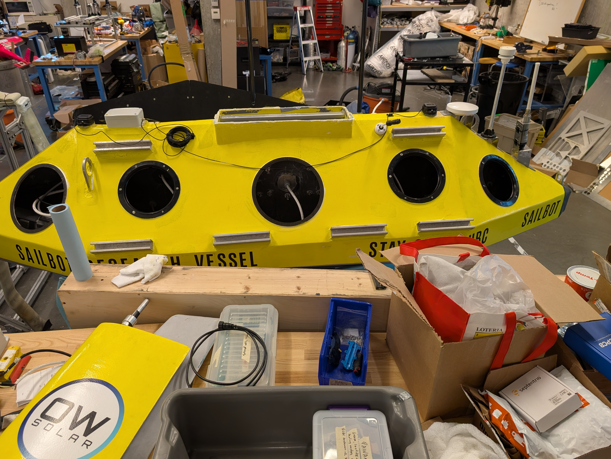
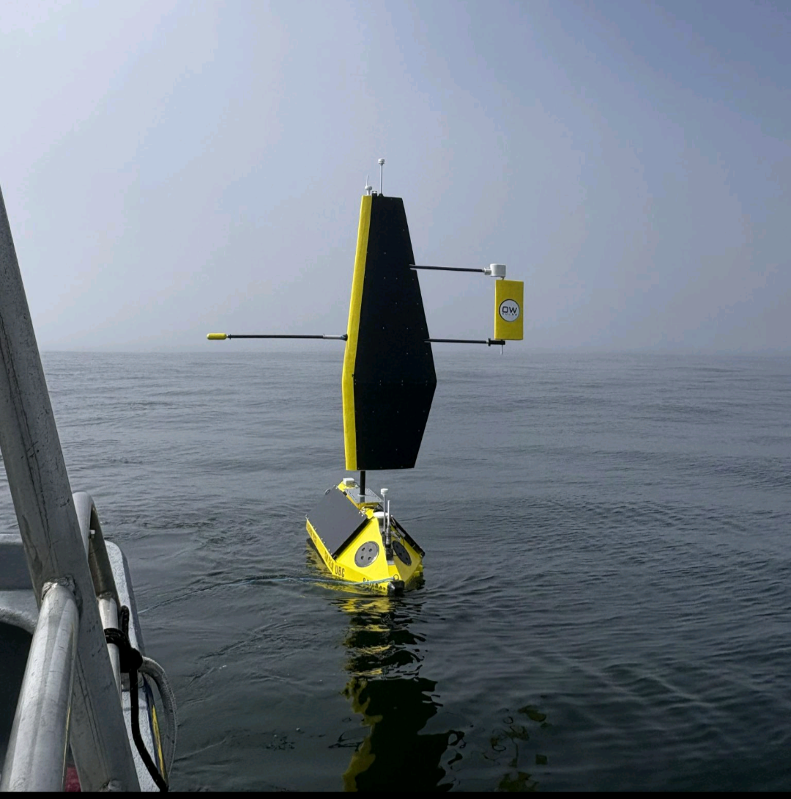

Overview
I'm a member of UBC Sailbot's mechanical sub-team, working on the physical systems that keep our autonomous research sailboat built, tested, and on the water. My work has centered on Polaris, the team's current boat, spanning structural design and FEA analysis to hands-on fabrication and internal documentation, engagin in formal design reviews with the rest of the engineering team to get feedback for iterative desgin.
Solar Panel Mounting System
Polaris relies on a set of thin, flexible solar panels backed with rigid closed-cell polyurethane foam for onboard power. However, the mounting system design I inherited from a previous member had a flaw which hadn't been caught yet. Partway through manufacturing the first panel, we traced out where the mounting hardware would actually sit on the hull and found the deck wasn't flat. A bump in the geometry meant the panel couldn't clear the surface given the height of the mounting rails. Rather than patch around it, I worked with a materials engineering student and our subteam lead to redesign the whole system from scratch.
- Co-designed a new aluminum rail mounting system to replace the original 24 fastener design, cutting fastener count in half and making the panels dramatically faster to remove and reinstall for deck hatch access.
- Performed SolidWorks FEA on the redesigned assembly under a 5kN worst-case wave loading scenario, cross-checking hand calculations and confirming the design could be built with fewer, shorter rail sections than originally proposed.
- Identified a galvanic corrosion risk after a procurement mix-up delivered fasteners in an incompatible aluminum alloy, and resolved it with a PTFE thread-tape mitigation rather than re-ordering and delaying the build.
- Manufactured and bonded the final assembly to the boat's carbon fibre deck using structural epoxy, following proper surface prep and using the panel assembly itself as a stencil to avoid measurement error on a boat with no flat reference surfaces.
- Presented the design, analysis, and final results to Sailbot's multidisciplinary engineering team across a series of formal design reviews, incorporating their feedback at each stage.
- Authored internal assembly documentation for the hull, keel, and solar panel systems so that teammates unfamiliar with the mechanical build could assemble Polaris correctly without direct supervision, allowing for more frequents on-water tests leading up to Polaris's maiden voyage.


The redesigned system cut fastener count per panel in half, resolved the deck clearance issue that had stalled the original design, and held up through Polaris's 3 day maiden voyage off the coast of Vancouver Island. The project also gave me a real lesson in the gap between a CAD model and the physical part in your hands. The deck bump, the fastener mix-up, and the corrosion risk were all things no amount of upfront modeling would have caught, and working through them taught me to build in verification checkpoints rather than trusting a design to work right from the model.
